Masterclass · Imagem, Processo e Decisão
Uma oficina sobre imagem, processo e decisão — Vini Poffo
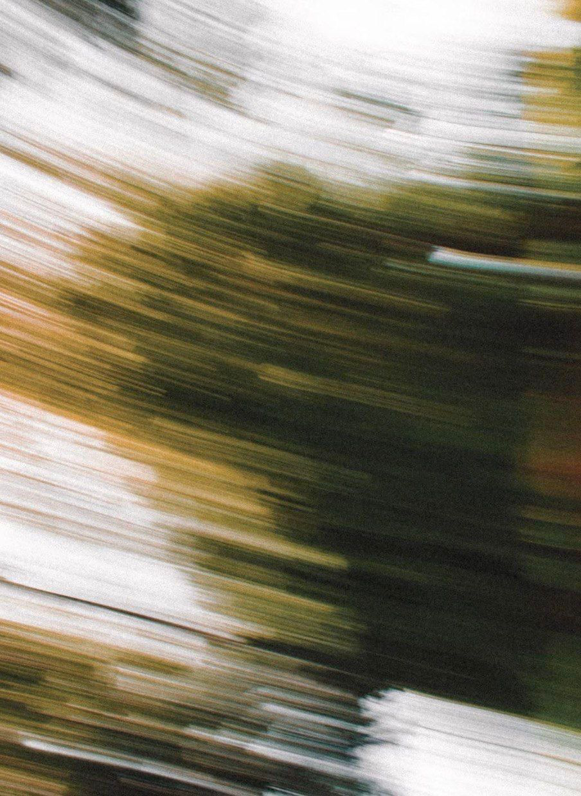
“Qual imagem de um videoclipe ou filme ficou gravada em você — e por quê?”
Não é uma aula sobre seguir regras. É sobre desenvolver um olhar — e depois colocar esse olhar em forma.
Parto sempre da imagem como sensação. A imagem precisa criar um estado — provocar algo em quem vê antes de explicar qualquer coisa.
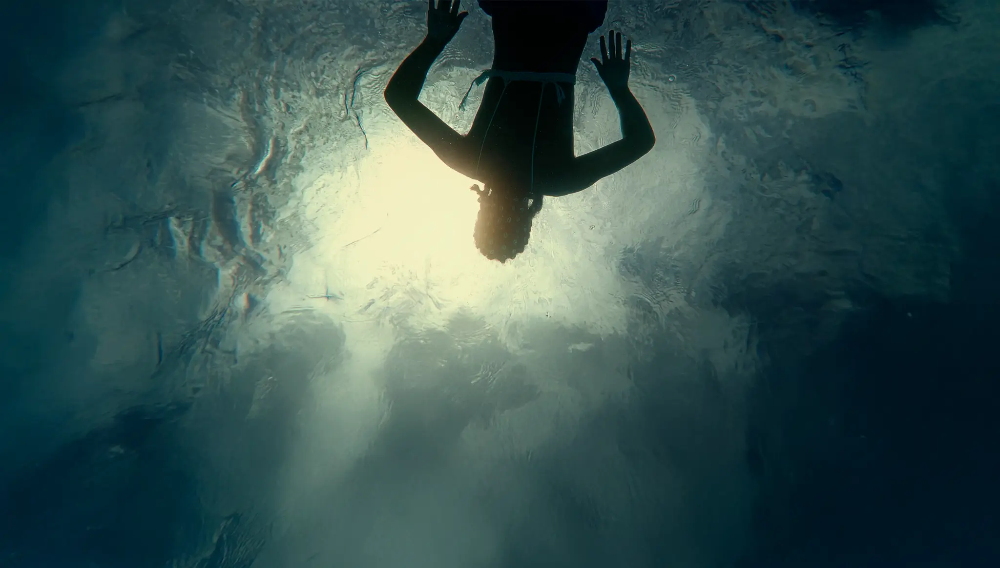
No cinema, você só existe
se der para ver.
Um personagem que sente saudade na literatura pode ser descrito em três parágrafos. No roteiro, você precisa decidir: qual é a imagem da saudade?
Literatura narra, descreve, acessa o interno. Cinema mostra, sugere, externaliza. Roteiro traduz — transforma o invisível em imagem possível.
Parte 01
O roteiro no cinema é um documento técnico — mas também é a primeira imagem que o filme existe. Antes de qualquer câmera, qualquer set, qualquer artista, existe uma decisão: o que mostrar e como mostrar.
01 — Linguagem Audiovisual
No cinema, você só existe se der pra ver. Um personagem que 'sente saudade' na literatura pode ser descrito em três parágrafos de fluxo de consciência. No roteiro, você precisa decidir: o que é a imagem da saudade?
_exercício de olhar
Escolham um sentimento.
Agora: qual seria a imagem desse sentimento? Não a explicação — a imagem.
02 — Da Ideia ao Roteiro
No videoclipe, a escaleta muitas vezes substitui o roteiro formal — organiza ambiências, performances e micro-narrativas sem precisar de diálogos ou estrutura dramática clássica.
03 — Construção de Personagens
Os personagens mais memoráveis não são coerentes — são contraditórios. O herói que tem medo. O vilão que ama. No videoclipe, o 'personagem' muitas vezes é o próprio artista — mas pensado como persona, não como pessoa.
04 — O Roteiro como Documento Técnico
O roteiro não existe para impressionar. Existe para que a equipe inteira — câmera, arte, produção, atores — saiba o que precisa ser filmado. Essa clareza é um ato de respeito com quem trabalha com você.
05 — O Tratamento Visual
No mercado de videoclipes, o roteiro formal é precedido pelo Tratamento Visual — a apresentação da visão criativa do diretor para o artista e a gravadora. Quando bem feito, é um equalizador: uma diretora nova com uma ideia forte pode vencer uma equipe de veteranos.
06 — A Limitação como Filtro
O cinema independente não é pior que o cinema de estúdio. A diferença mais poderosa está na necessidade de tomar decisões mais precisas — porque não tem dinheiro para desperdiçar.
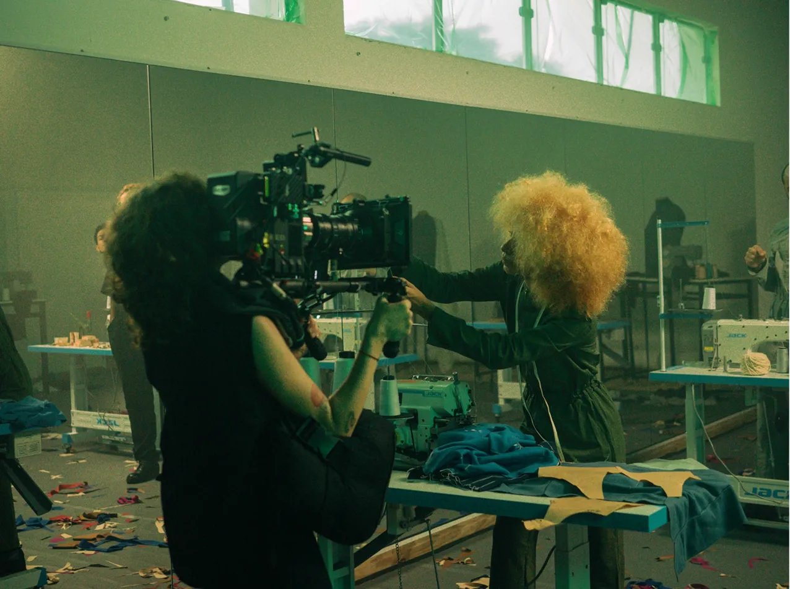
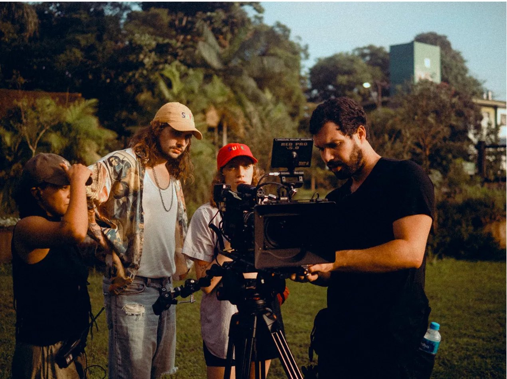
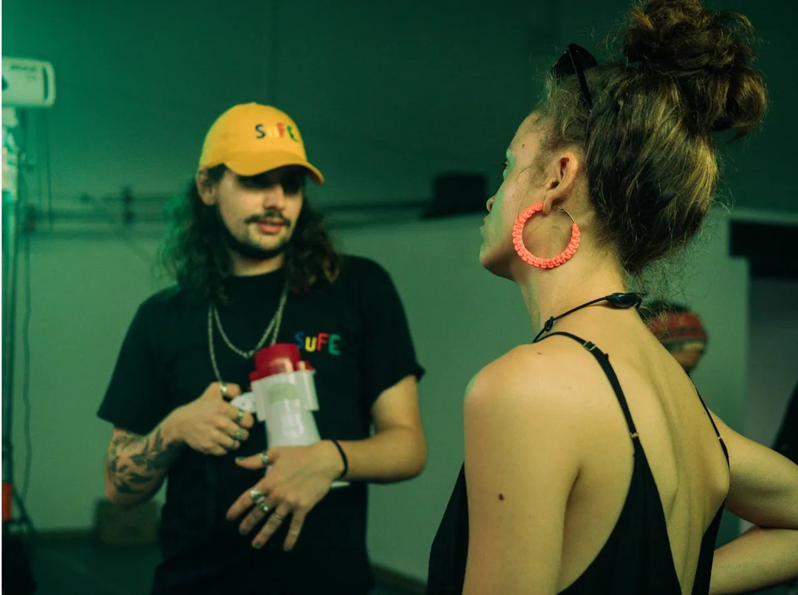
_atividade
Elementos
Vocês receberão papeis em branco. Escreva palavras representando: "Onde/quando", "Personagem", "Gênero de Filme" e "Frase". Coloque na urna.
Escolha
Retirem uma palavra de cada categoria da urna. Estas serão os elementos-chave para a criação da sua cena cinematográfica.
Roteiro
Com seus elementos em mãos, usem o tempo para planejar como essas palavras se encaixarão em uma cena. Se deixem levar pela criatividade!
Apresentação
Compartilhem as cenas individualmente. Analisem juntos como as diferentes combinações de palavras afetaram as histórias.
Parte 02
Se antes foi sobre como a ideia ganha forma antes de chegar ao set, agora é sobre o que acontece quando você chega lá. Dirigir é uma sequência de decisões — algumas planejadas, muitas não.
_antes de começar
Tocar a música que será gravada no curso. Os alunos têm 10 minutos para jogar o maior número de ideias possíveis. Antes de entrar nos tópicos de direção, cada aluno já tem em mente o projeto real que vai executar.
_objetivo
O que vier a seguir não é teoria abstrata — é ferramenta para resolver o que vocês acabaram de esboçar.
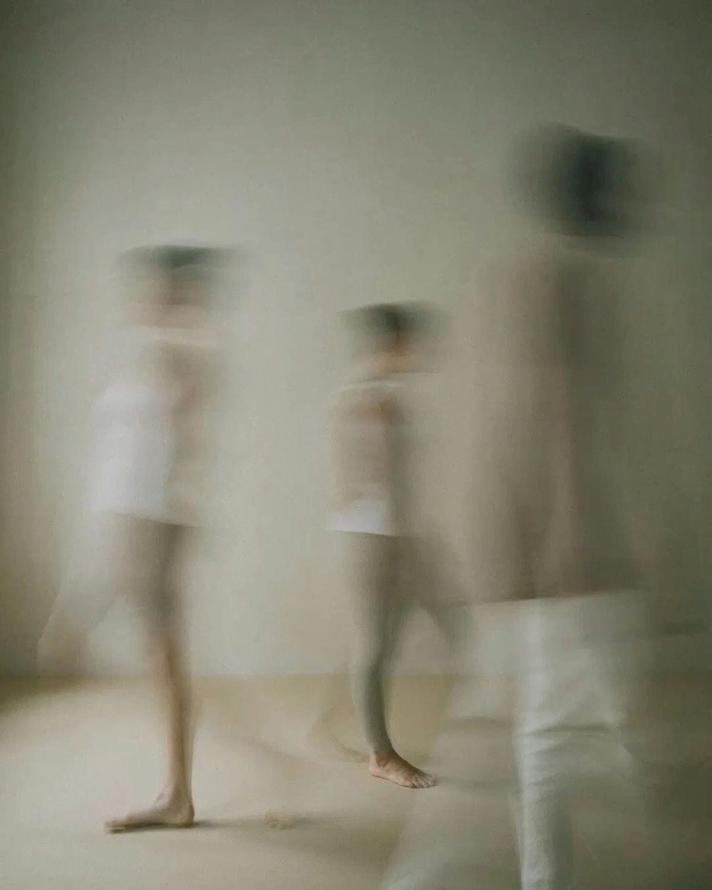
_linguagem híbrida
07 — O Videoclipe como Linguagem Híbrida
O videoclipe não é um mini-filme com música. É um formato com linguagem própria, que mistura cinema, publicidade, performance e videoarte — com a canção como suporte, referência e limite.
_princípio
Toda decisão de set tem que responder a uma pergunta: isso serve ao conceito?
08 — A Câmera Musical
A câmera em um videoclipe não está apenas documentando uma performance. Ela está participando da música. Cada movimento, cada corte, cada escolha de lente é uma nota dentro da canção.
09 — Decupagem
Decupar é dividir a cena em planos. É o ato de transformar o que está no roteiro — ou no tratamento — em uma lista de imagens que precisam ser filmadas. A decupagem é o principal instrumento de trabalho da diretora antes do set.
_câmera musical
Antes de chegar ao set, ouça a música muitas vezes com o roteiro na mão. Marque onde são os beats, onde a canção respira, onde explode. A decupagem de um videoclipe é uma partitura visual.
10 — Direção de Arte e Iluminação
Direção de arte não é decoração. É a construção do espaço visual onde o filme acontece. Cada objeto, cada cor, cada textura tem uma função narrativa ou emocional — ou não deveria estar ali.
11 — Direção de Artistas
Dirigir um artista num videoclipe é diferente de dirigir um ator num filme. O artista já carrega uma relação com aquela canção — muitas vezes autobiográfica, muitas vezes performativa. Sua função como diretora é saber usar isso.
_técnica
Em vez de dizer "fique triste", diga "pense em um lugar que você não pode mais voltar". A câmera captura o que é real.
12 — A Arte do Desapego
Nenhum set acontece exatamente como o planejado. A questão não é evitar o improviso. É saber improvisar bem. Dirigir é estar presente e atenta aos detalhes. Articular para que conceito e execução caminhem juntos.
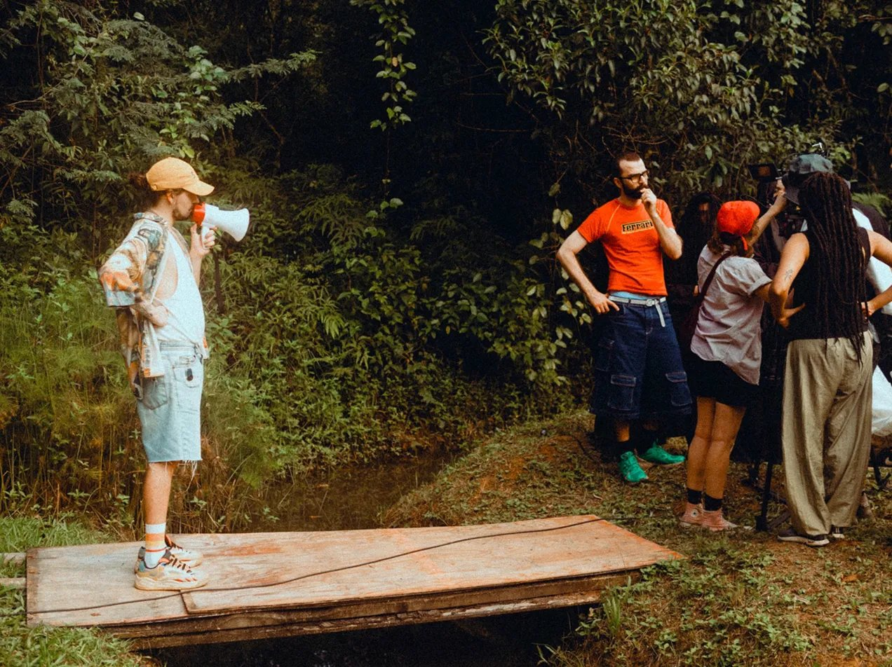
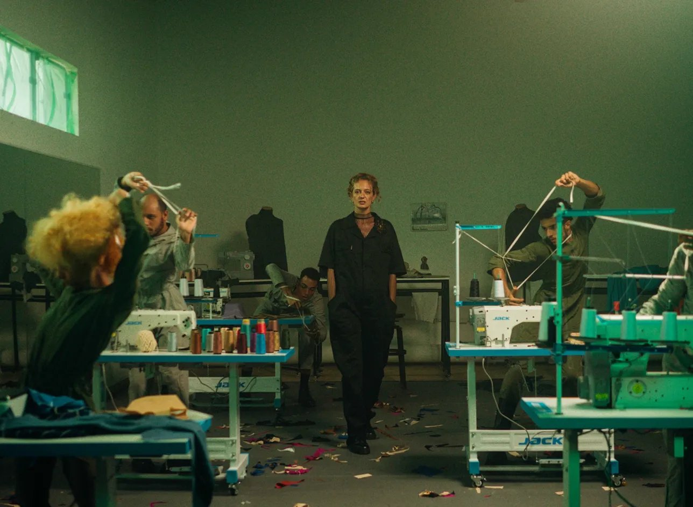
“Dirigir, pra mim, é estar presente e atenta aos detalhes. Articular para que conceito e execução caminhem juntos — e quando eles se separam, saber o que preservar.”
_atividade
Ouça a música
Toque a música que será gravada no curso. Ouça com atenção total — sem tela, sem distração.
10 minutos de ideias
Jogue o maior número de ideias possíveis no papel. Não filtre. Não julgue. Quantidade antes de qualidade.
Identifique o conceito
De tudo que você escreveu, qual é a ideia que mais te provoca? Qual é a imagem que você não consegue tirar da cabeça?
Uma frase
Escreva o conceito do seu clipe em uma única frase. Essa frase vai guiar todas as decisões do set.
_projetos
Cada projeto a seguir tem seu tratamento visual, o clipe final e o material de bastidores. Veja como o conceito se transforma em imagem.
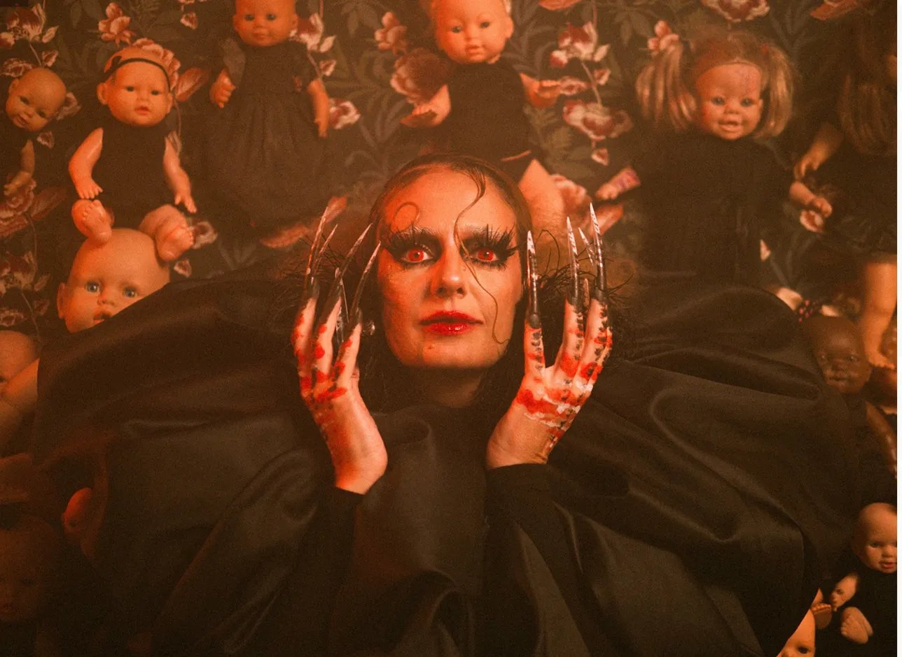
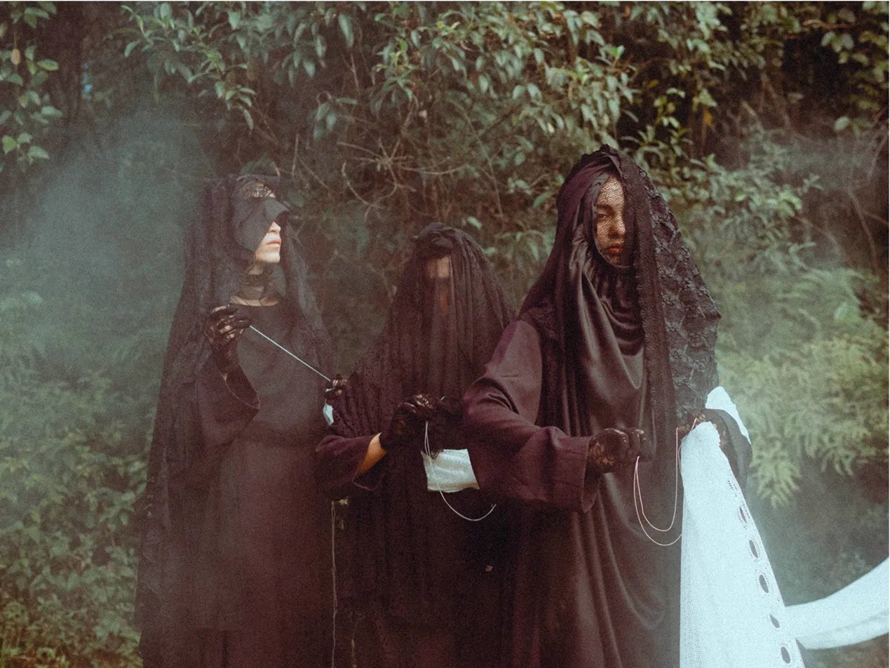
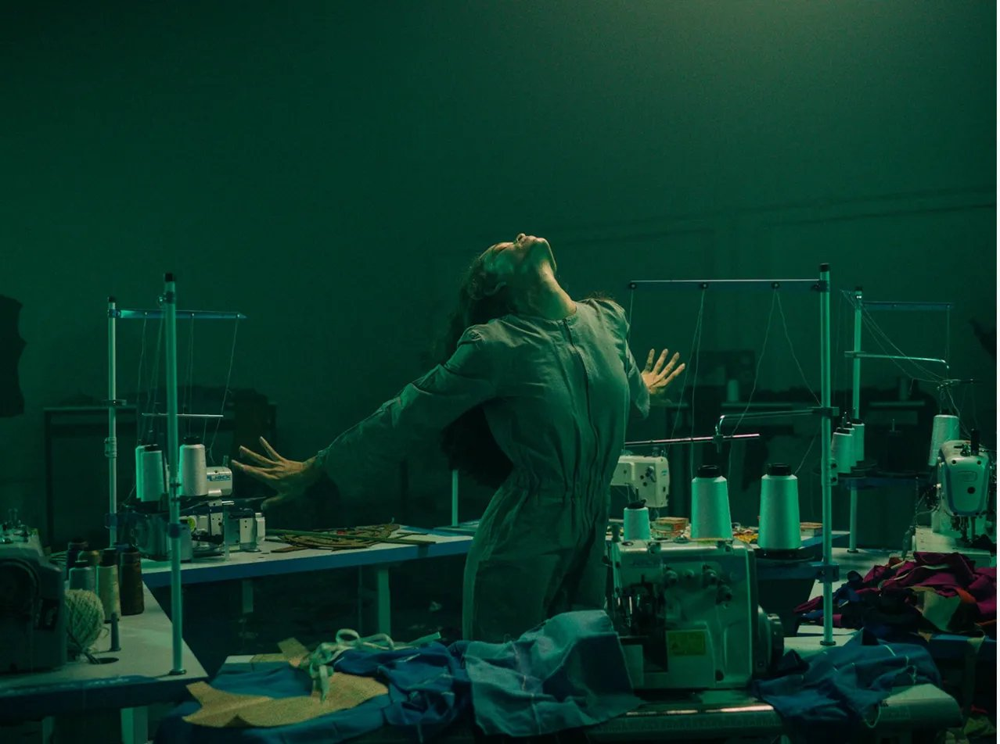
Letrux — Aranha (clipe oficial)
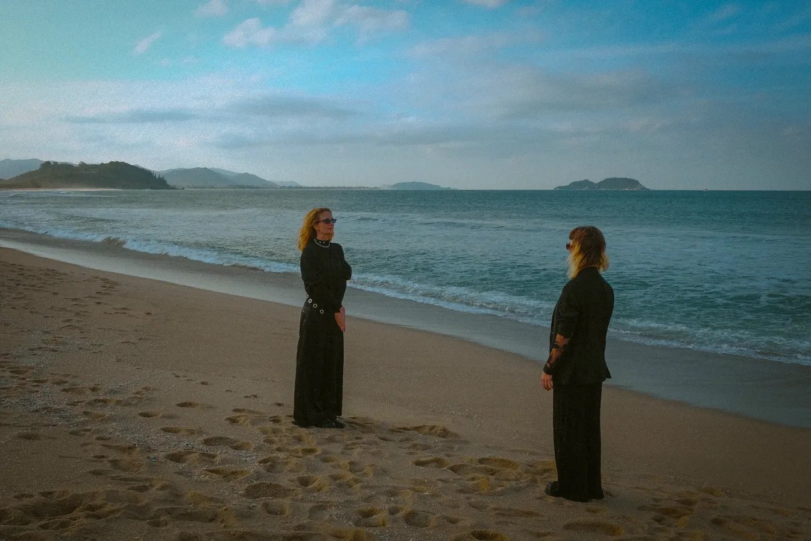
Tratamento Visual
Tratamento visual · Direção Vini Poffo
Vira Essa Boca Pra Cá
Dropar Teu Nome
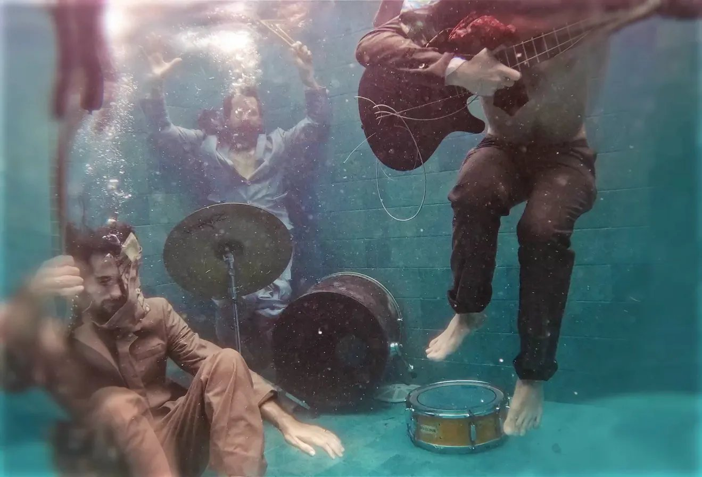
Tratamento Visual
Tratamento visual · Direção Vini Poffo
Outrês de Nós
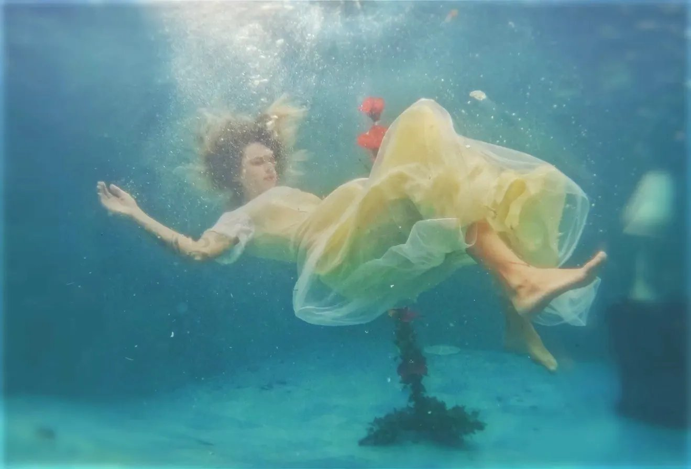
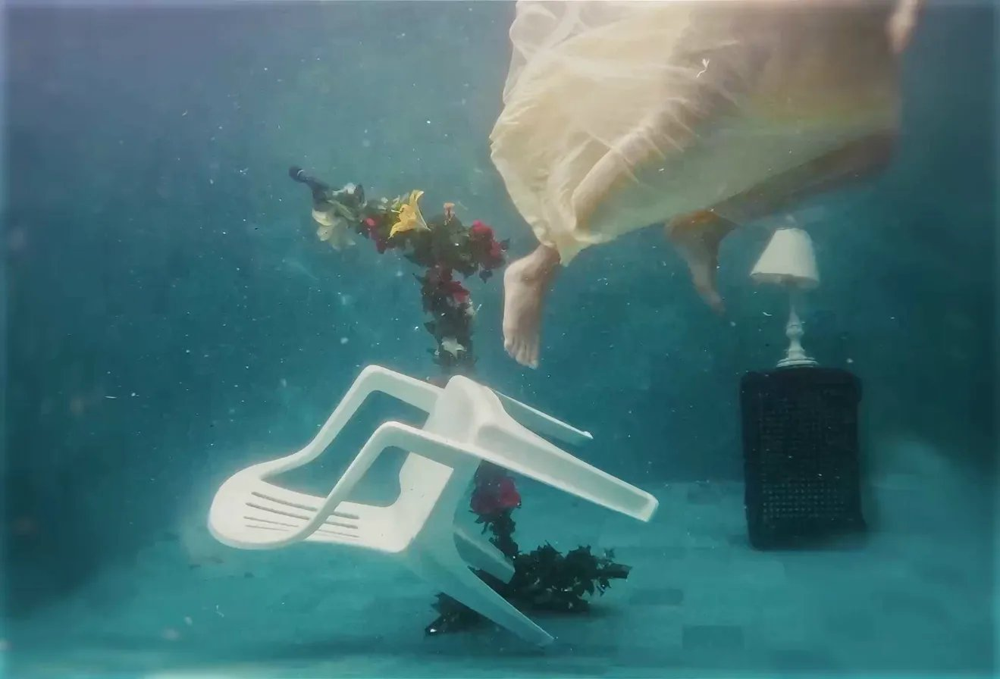
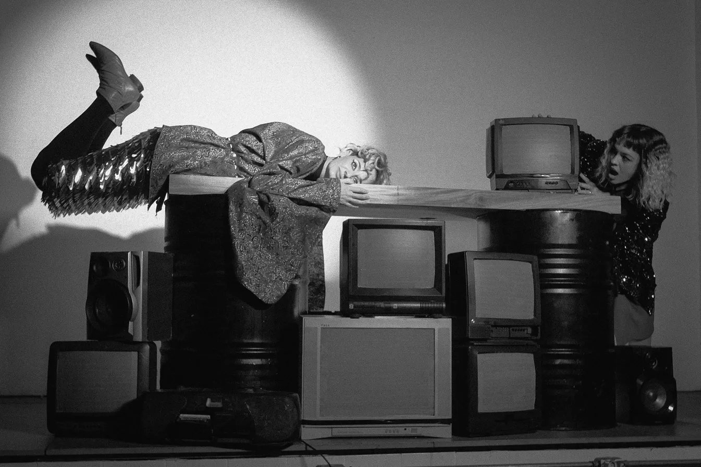
_projeto
Videoclipe · Direção Vini Poffo · Tratamento visual e set design
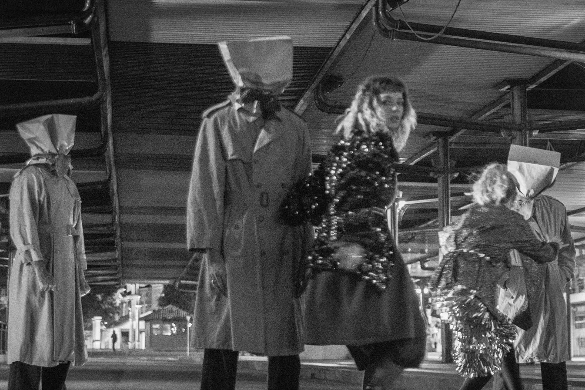
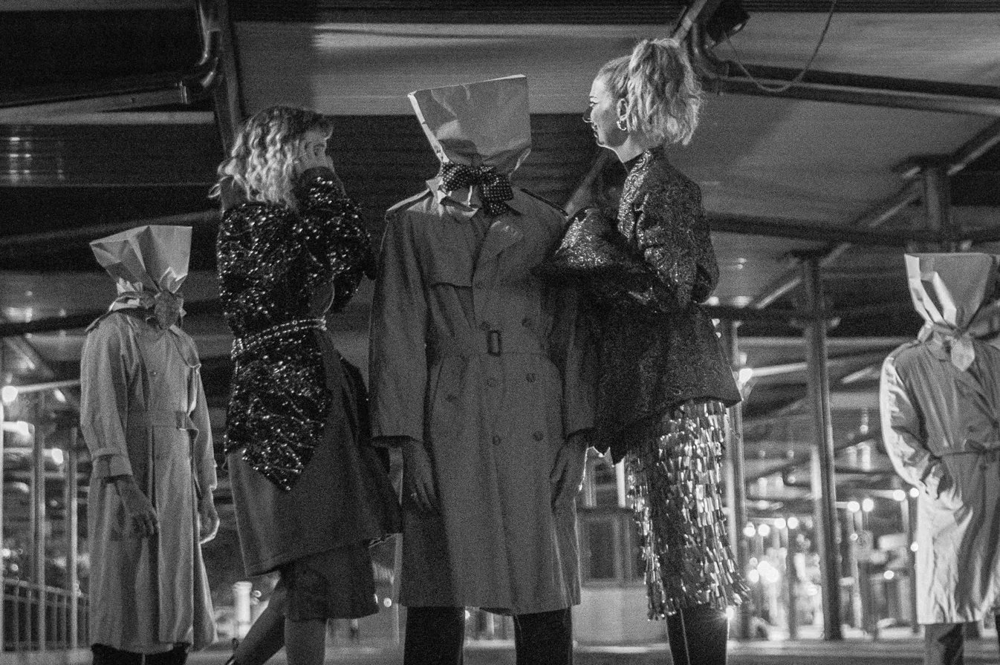
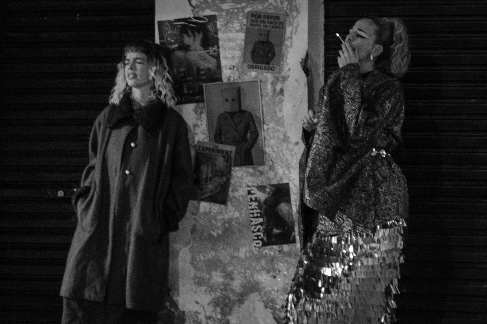
Tratamento Visual
Tratamento visual · Direção Vini Poffo
_para levar daqui
O set é a segunda. A edição é a terceira. Cada etapa transforma — e isso é bom.
É o filtro que revela o que importa. Uma câmera de celular com uma ideia forte bate uma câmera de cinema com uma ideia fraca.
A melhor decisão no set quase sempre é a que você toma olhando para o que está na sua frente — não para o que estava no papel.
Não precisa ser cara. Precisa ser verdadeira. Trabalhe com objetos de memória, elementos que carregam vida dentro da obra.
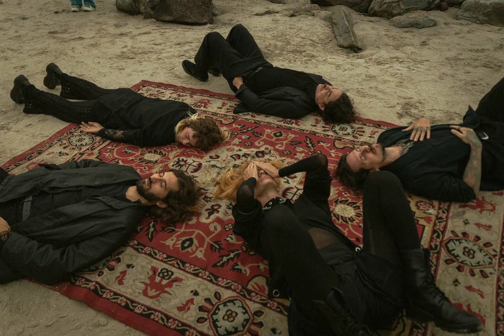
Leituras sugeridas
Syd Field — Manual do Roteiro
A bíblia da estrutura em três atos
Robert McKee — Story
Narrativa para roteiristas, romancistas e outros
Glauber Rocha — Revolução do Cinema Novo
Manifesto e teoria do cinema de guerrilha
Walter Murch — Em Um Piscar de Olhos
A arte da montagem
Movimentos para conhecer
Cinema Novo Brasileiro (anos 60)
Glauber Rocha, Nelson Pereira dos Santos, Cacá Diegues
Nouvelle Vague Francesa (anos 60)
Godard, Truffaut, Resnais
Dogma 95 (anos 90)
Lars von Trier, Thomas Vinterberg — regras como libertação
Mumblecore (anos 2000)
Cinema ultra-low budget, câmera na mão, personagens reais